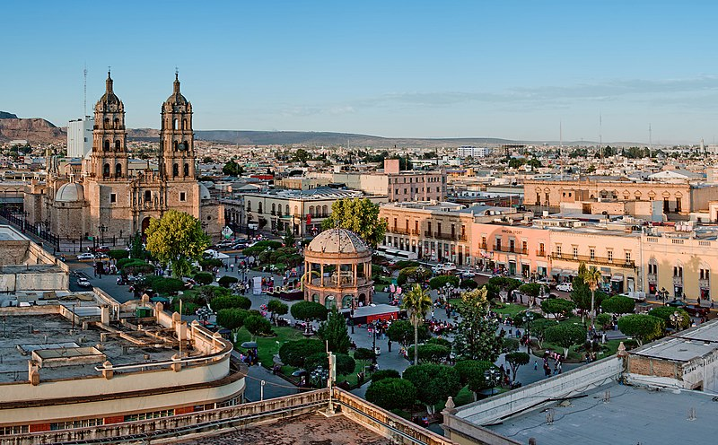

Durango es un estado situado en el noroeste de México, con una superficie de 123,181 km², lo que lo convierte en uno de los estados más grandes del país. Su capital es la ciudad de Durango, conocida por su arquitectura colonial y su rica historia. El estado es caracterizado por su diversidad geográfica, que incluye montañas, desiertos y bosques. Durango juega un papel importante en la producción de madera y minería, y es conocido por su cultura y tradiciones que reflejan su historia y la influencia de los pueblos indígenas.
Una de las tradiciones más destacadas de Durango es la Feria Nacional de Durango, celebrada en la ciudad de Durango durante el mes de julio. Esta feria incluye eventos culturales, conciertos, espectáculos y una exhibición de productos regionales. Otra tradición importante es la celebración de la Semana Santa en Durango, que incluye procesiones y actos religiosos en diferentes municipios, destacándose por su solemnidad y la participación de la comunidad local. Además, la Fiesta de la Virgen de la Asunción, en el mes de agosto, es una celebración religiosa que combina elementos indígenas y católicos, con festividades y eventos en honor a la Virgen.
La gastronomía de Durango es rica y variada, con platillos que reflejan la influencia de la cocina del norte de México. Uno de los platillos más emblemáticos es el asado de boda, un guiso a base de carne de cerdo con chiles y especias, servido con arroz y tortillas. Otro platillo típico es el caldillo durangueño, una sopa espesa de carne de res con chiles secos y vegetales. Las gorditas de maíz rellenas de queso y carne también son populares en la región, junto con los tradicionales buñuelos, un postre frito espolvoreado con azúcar y canela.
| Dato de interés | Dato de interés | Dato de interés |
|---|---|---|
| Durango es conocido por su impresionante paisaje cinematográfico, ya que ha sido sede de numerosas producciones cinematográficas, especialmente del género western, debido a sus paisajes áridos y montañosos que evocan el Viejo Oeste. | El estado alberga el Parque Natural de la Sierra de Órganos, un área protegida famosa por sus formaciones rocosas únicas y su biodiversidad. El parque es un popular destino para el ecoturismo y ofrece oportunidades para el senderismo y la observación de la naturaleza. | Durango es uno de los principales productores de carne de res en México, con una industria ganadera que se ha desarrollado a lo largo de los años. La calidad de la carne durangueña es muy apreciada tanto a nivel nacional como internacional. |